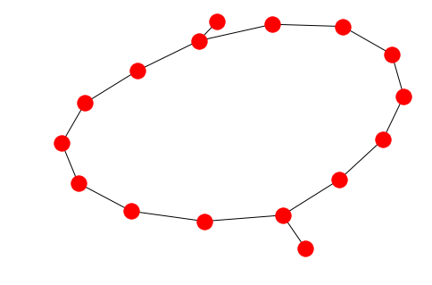

Adapters example¶
Demonstration using the networkx adapter. This example requires installing the networkx library before continuing:
pip install networkx
[1]:
import kmapper
from sklearn import datasets
import networkx as nx
Construct data and a simple Mapper¶
[2]:
data = datasets.make_circles(n_samples=1000)[0]
[3]:
km = kmapper.KeplerMapper()
lens = km.project(data)
graph = km.map(X=data, lens=lens)
Convert Mapper to a networkx graph¶
We can easily convert the graph to a networkx graph representation. This enables us to use many of the commonly provided algorithms and visualization methods.
[4]:
nx_graph = kmapper.adapter.to_nx(graph)
[6]:
nx.draw(nx_graph)

[ ]: